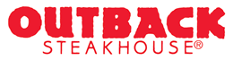
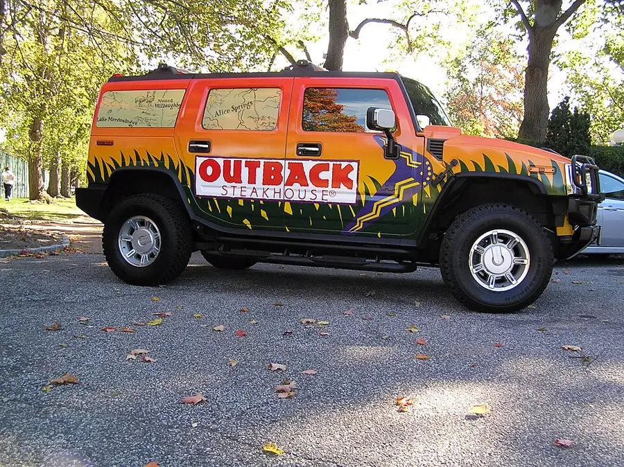

아웃백 스테이크하우스 Outback Steakhouse
아웃백 스테이크하우스(Outback Steakhouse)는 1988년 설립된 미국의 패밀리 레스토랑 브랜드이다. 본사는 미국 플로리다주 탬파에 있으며 쇠고기 요리를 전문으로 한다.
최종 업데이트

아웃백 스테이크하우스는 어떤 브랜드인가
아웃백은 호주식 영어로 '오지'를 뜻하는 Outback이라는 명칭을 쓰고 매장 내부를 오스트레일리아 식으로 꾸미는 경우가 많아 오스트레일리아 브랜드로 보이기도 하나, 실제로는 미국의 외식업체이다. 북미, 남미, 유럽, 아시아, 오스트레일리아의 22개 국가에서 1200개 이상의 점포를 운영한다.
쇠고기 요리를 전문으로 하며 여러 사이드 메뉴를 함께 취급한다. 미국에서는 USDA의 초이스 등급 쇠고기에 특화된 메뉴를 주로 취급한다.
대한민국에서는 과거 호주산 쇠고기를 수입했으나 현재는 미국산 쇠고기만 쓴다. 미국 외 지역에서는 프랜차이즈와 합작투자의 형태로 운영한다.
아웃백 스테이크하우스는 어떻게 시작되고 성장했나
회사는 1988년에 Bob Basham, Trudy Cooper, Chris T. Sullivan, Tim Gannon이 창립했다.
미국 내에서는 OSI 레스토랑 파트너십(OSI Restaurant Partnership)이 소유하고 운영했으며, 외국에서는 프랜차이즈와 합작투자의 형태로 운영했다. 대한민국에는 1997년 유한회사 오지정(Aussie Chung, Inc.)과 프랜차이즈 계약을 맺고 진출했다.
진출 이후 2000년대 패밀리 레스토랑 붐을 타고 인기를 누렸으며, 2004년부터 T.G.I. Friday's가 가지고 있던 패밀리 레스토랑 점유율 1위를 차지했다.
아웃백 스테이크하우스의 브랜드 아이덴티티는 무엇인가
미국 브랜드이면서 호주식 이름과 인테리어를 내세우는 스테이크 중심의 패밀리 레스토랑이며, 대한민국에서는 스테이크 고급화로 살아남은 체인이다.
아웃백 스테이크하우스의 대표 제품과 서비스는 무엇인가
쇠고기 요리를 전문으로 하며, 매장에서는 에피타이저와 메인 메뉴를 판매한다. 에피타이저로는 식전 빵인 부시맨 브레드, 두툼한 감자튀김에 체다치즈와 잭치즈를 녹이고 베이컨을 뿌린 오지치즈후라이, 코코넛가루를 묻혀 튀긴 골드 코스트 코코넛 슈림프가 있다.
메인 메뉴의 스테이크로는 블랙라벨 스테이크, 토마호크 스테이크, 오지 포터하우스 스테이크, 트러플 크림 안심 스테이크 등이 있다. 고객 응대는 BSP6라는 기본 서비스 기준을 따르며, 자기소개부터 후식 제공까지 여섯 단계로 이루어진다.
자체 회원제도인 부메랑 멤버쉽(Boomerang Membership)도 운영한다.
아웃백 스테이크하우스는 지금 어떤 상태인가
2015년부터 수익성이 떨어지는 하위 34개(전체 매장 중 31.2%) 매장을 철수하기로 했다. 대한민국에서는 2010년대 초반부터 패밀리 레스토랑의 인기가 하락하며 낮은 매출과 경영난을 겪었으나, 2017년 사모펀드로 인수된 이후 토마호크 스테이크로 대표되는 스테이크 메뉴의 고급화와 전략 변경으로 매출이 다시 올랐다.
현재 대한민국에서 거의 유일하게 살아남은 패밀리 레스토랑 체인으로 영업 중이며, 모기업은 Bloomin' Brands이다.
아웃백 스테이크하우스 로고는 어떻게 변해왔나
사진으로 보는 아웃백 스테이크하우스의 역사

자주 묻는 질문
아웃백 스테이크하우스는 어느 나라 브랜드인가요?
아웃백 스테이크하우스는 미국의 식음료 브랜드입니다.
아웃백 스테이크하우스는 언제 설립되었나요?
아웃백 스테이크하우스는 1988년 설립되었습니다.
아웃백 스테이크하우스의 브랜드 아이덴티티는 무엇인가요?
미국 브랜드이면서 호주식 이름과 인테리어를 내세우는 스테이크 중심의 패밀리 레스토랑이며, 대한민국에서는 스테이크 고급화로 살아남은 체인이다.
아웃백 스테이크하우스의 대표 제품은 무엇인가요?
쇠고기 요리를 전문으로 하며, 매장에서는 에피타이저와 메인 메뉴를 판매한다.
아웃백 스테이크하우스는 현재 어떤 상태인가요?
2015년부터 수익성이 떨어지는 하위 34개(전체 매장 중 31.2%) 매장을 철수하기로 했다.
아웃백 스테이크하우스의 창업자는 누구인가요?
아웃백 스테이크하우스의 창업자는 Chris T. Sullivan, Tim Gannon입니다(위키데이터 기준).
아웃백 스테이크하우스의 본사는 어디에 있나요?
아웃백 스테이크하우스의 본사는 탬파에 있습니다(위키데이터 기준).
출처와 검증
아웃백 스테이크하우스 관련 참고: 공식 웹사이트 · 위키데이터 Q1064893 · 한국어 위키백과 · 영어 위키백과. 브랜드명은 한글과 원어를 함께 표기하되 데이터에 없는 표기는 만들지 않습니다. 기원 국가·설립연도는 검수된 정의문에서 확인된 값을 우선하고, 없을 때만 공식 웹사이트 URL이 일치하는 위키데이터 개체의 값을 씁니다. 웹 첫 보관은 인터넷 아카이브가 공식 사이트 첫 화면을 처음 보관한 날로, 사이트 개설일과 다를 수 있습니다. 위키데이터 값은 2026-11-06 기준입니다.